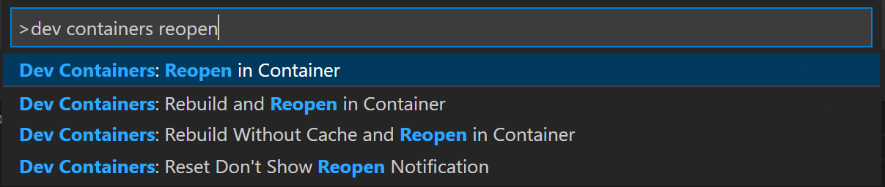
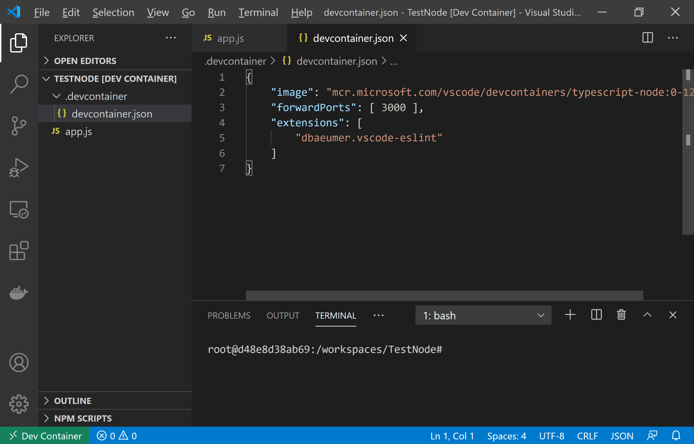
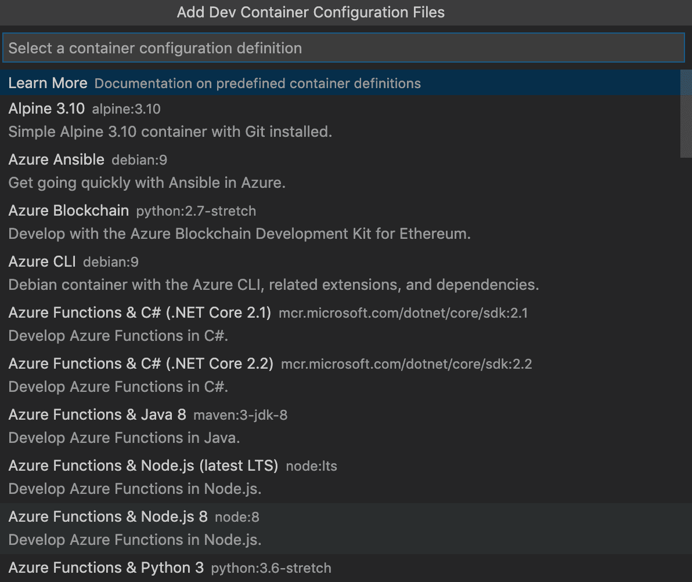
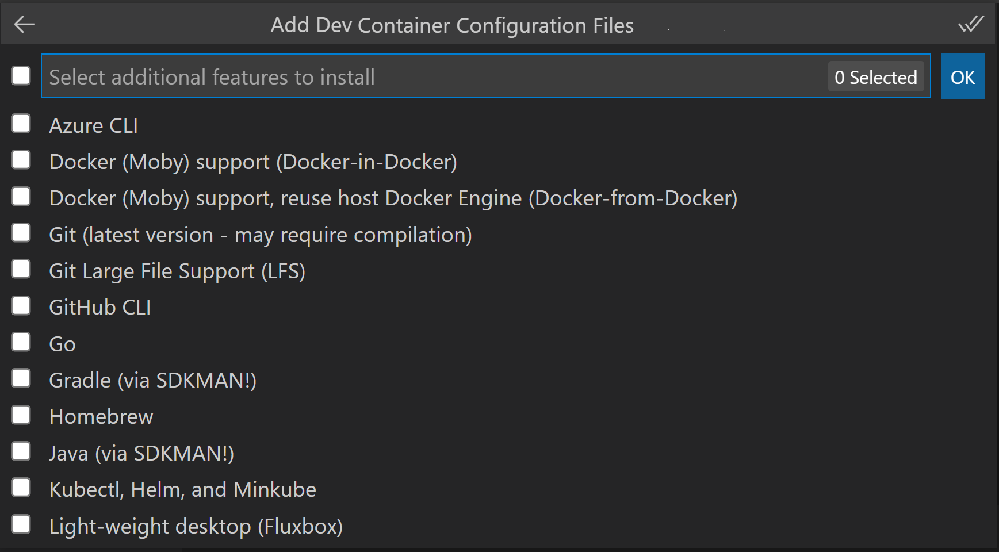
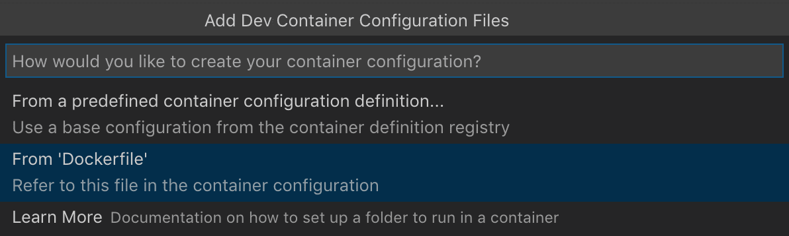
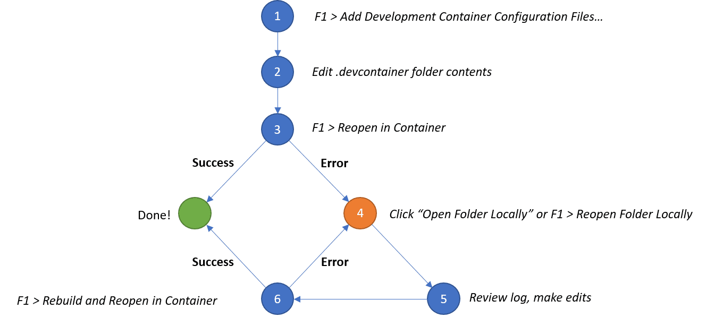
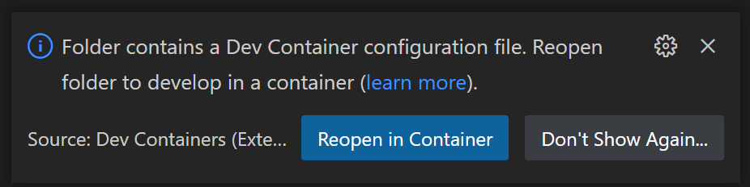
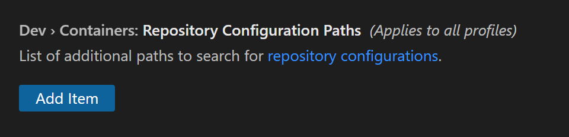

创建开发容器
Visual Studio Code Dev Containers 扩展允许你将 Docker 容器用作功能齐全的开发环境。它允许你在容器中打开任何文件夹或仓库，并充分利用 Visual Studio Code 的完整功能集。项目中的 devcontainer.json 文件告诉 VS Code 如何访问（或创建）一个具有明确定义的工具和运行时栈的开发容器。此容器可用于运行应用程序，或提供处理代码库所需的独立工具、库或运行时。
创建开发容器的路径
在本文档中，我们将逐步介绍在 VS Code 中创建开发（dev）容器的步骤：
- 创建一个
devcontainer.json，描述 VS Code 应该如何启动容器以及在连接后应该做什么。 - 通过使用 Dockerfile 对开发容器进行更改并使其持久化，例如安装新软件。
- 通过 Docker Compose 配置多个容器。
- 在进行更改时，构建你的开发容器以确保更改生效。
完成上述任何步骤后，你就拥有了一个功能齐全的开发容器，你可以继续本教程的下一步以添加更多功能，或者停止并开始在你当前的开发环境中工作。
注意：Dev Containers 扩展有一个 Dev Containers: Add Dev Container Configuration Files... 命令，允许你从列表中选择预定义的容器配置。如果你希望立即拥有一个完整的开发容器，而不是逐步构建 devcontainer.json 和 Dockerfile，可以跳到自动化开发容器创建。
创建 devcontainer.json 文件
VS Code 的容器配置存储在一个 devcontainer.json 文件中。该文件类似于用于调试配置的 launch.json 文件，但它用于启动（或附加到）你的开发容器。开发容器配置要么位于 .devcontainer/devcontainer.json 下，要么作为 .devcontainer.json 文件（注意点前缀）存储在你的项目根目录中。
你可以使用镜像作为 devcontainer.json 的起点。镜像就像一个迷你磁盘驱动器，预装了各种工具和操作系统。你可以从容器注册表拉取镜像，注册表是存储镜像的仓库集合。以下是一个简单的 devcontainer.json 示例，它使用了一个预构建的 TypeScript 和 Node.js VS Code 开发容器镜像：
{
"image": "mcr.microsoft.com/devcontainers/typescript-node:0-18"
}你可以更改配置以执行以下操作：
- 在容器中安装其他工具，如 Git。
- 自动安装扩展。
- 转发或发布其他端口。
- 设置运行时参数。
- 重用或扩展现有的 Docker Compose 设置。
- 添加更多高级容器配置。
对于此示例，如果你希望将 Code Spell Checker 扩展安装到你的容器中并自动转发端口 3000，你的 devcontainer.json 将如下所示：
{
"image": "mcr.microsoft.com/devcontainers/typescript-node",
"customizations": {
"vscode": {
"extensions": [
"streetsidesoftware.code-spell-checker"
]
}
},
"forwardPorts": [ 3000 ]
}注意： 其他配置已根据基础镜像中的内容添加到容器中。例如，我们在上面添加了streetsidesoftware.code-spell-checker扩展，而容器还将包含"dbaeumer.vscode-eslint"，因为它是mcr.microsoft.com/devcontainers/typescript-node的一部分。这在使用 devcontainer.json 进行预构建时会自动发生，你可以在预构建部分中了解更多信息。
有了上面的 devcontainer.json，你的开发容器就功能齐全了，你可以连接到它并开始在其中进行开发。使用 Dev Containers: Reopen in Container 命令试一试：

运行此命令后，当 VS Code 重新启动时，你现在处于一个 Node.js 和 TypeScript 开发容器中，端口 3000 已转发，ESLint 扩展已安装。连接后，注意状态栏左侧的绿色远程指示器，表明你已连接到你的开发容器：

其他开发容器场景
通过 devcontainer.json 文件，你可以：
- 启动一个独立容器来隔离你的工具链或加快设置速度。
- 使用由镜像、Dockerfile 或 Docker Compose 定义的容器部署应用程序。
- 从开发容器内部使用 Docker 或 Kubernetes 来构建和部署你的应用程序。
如果 devcontainer.json 支持的工作流无法满足你的需求，你也可以附加到已在运行的容器。
提示： 想使用远程 Docker 主机？请参阅在远程 Docker 主机上开发文章了解设置详情。
安装其他软件
你可能希望在开发容器中安装其他软件。一旦 VS Code 连接到容器，你可以打开 VS Code 终端并对容器内的操作系统执行任何命令。这允许你从 Linux 容器内部安装新的命令行工具，并启动数据库或应用程序服务。
大多数容器镜像基于 Debian 或 Ubuntu，使用 apt 或 apt-get 命令来安装新软件包。你可以在 Ubuntu 的文档中了解有关该命令的更多信息。Alpine 镜像包含类似的 apk 命令，而 CentOS / RHEL / Oracle SE / Fedora 镜像使用 yum 或最近使用 dnf。
你要安装的软件的文档通常会提供具体的说明，但如果你在容器中以 root 身份运行，可能不需要在命令前加上 sudo。
例如：
# 如果以 root 身份运行
apt-get update
apt-get install <package>如果你以 root 身份运行，只要容器中配置了 sudo，你就可以安装软件。所有预定义容器都设置了 sudo，但向容器添加非 root 用户文章可以帮助你为自己的容器设置此项。无论如何，如果你安装并配置了 sudo，你就可以在以任何用户（包括 root）身份运行时使用它。
# 如果已安装并配置 sudo
sudo apt-get update
sudo apt-get install <package>假设你想安装 Git。你可以在 VS Code 的集成终端中运行以下命令：
# 如果已安装并配置 sudo
sudo apt-get update
# 安装 Git
sudo apt-get install git你也可以使用 devcontainer.json 中的 "features" 属性从预定义的功能集中安装工具和语言，甚至使用你自己的功能。
例如，你可以通过以下方式安装最新版本的 Azure CLI：
"features": {
"ghcr.io/devcontainers/features/azure-cli:1": {
"version": "latest"
}
}请参阅 Dev Container Features 规范了解更多详细信息。
重新构建
在编辑 .devcontainer 文件夹的内容时，你需要重新构建才能使更改生效。使用 Dev Containers: Rebuild Container 命令来更新你的容器。
但是，如果你重新构建容器，你将不得不重新安装你手动安装的任何内容。为了避免此问题，你可以使用 devcontainer.json 中的 postCreateCommand 属性或自定义 Dockerfile。
自定义 Dockerfile 将受益于 Docker 的构建缓存，并且比 postCreateCommand 重新构建更快。但是，Dockerfile 在开发容器创建和工作区文件夹挂载之前运行，因此无法访问工作区文件夹中的文件。Dockerfile 最适合安装独立于工作区文件的软件包和工具。
postCreateCommand 操作在容器创建后运行，因此你也可以使用该属性来运行诸如 npm install 之类的命令，或在源代码树中执行 shell 脚本（如果你已挂载它）。
"postCreateCommand": "bash scripts/install-dependencies.sh"你也可以使用交互式 bash shell，以便加载你的 .bashrc，自动为你的环境自定义 shell：
"postCreateCommand": "bash -i scripts/install-dependencies.sh"像 NVM 这样的工具如果不使用 -i 将 shell 置于交互模式就无法工作：
"postCreateCommand": "bash -i -c 'nvm install --lts'"该命令需要退出，否则容器无法启动。例如，如果你将应用程序启动添加到 postCreateCommand，该命令将不会退出。
还有一个 postStartCommand，它在每次容器启动时执行。其参数的行为与 postCreateCommand 完全相同，但命令在启动时执行，而不是在创建时执行。
在 devcontainer.json 中直接引用镜像或通过 postCreateCommand 或 postStartCommand 安装软件，不如使用 Dockerfile 实践更为高效。
Dockerfile
Dockerfile 也将位于 .devcontainer 文件夹中。你可以将 devcontainer.json 中的 image 属性替换为 dockerfile：
{
"build": { "dockerfile": "Dockerfile" },
"customizations": {
"vscode": {
"extensions": [
"dbaeumer.vscode-eslint"
]
}
},
"forwardPorts": [ 3000 ]
}当你进行诸如安装新软件之类的更改时，Dockerfile 中所做的更改即使在重新构建开发容器后也会保持不变。
在你的 Dockerfile 中，使用 FROM 来指定镜像，使用 RUN 指令来安装任何软件。你可以使用 && 将多个命令串联起来。
FROM mcr.microsoft.com/devcontainers/javascript-node:0-18
RUN apt-get update && export DEBIAN_FRONTEND=noninteractive \
&& apt-get -y install git注意：DEBIAN_FRONTEND 导出可以避免你在继续使用容器时出现警告。
自动化开发容器创建
与其手动创建 .devcontainer，不如从命令面板（kbstyle(F1)）中选择 Dev Containers: Add Dev Container Configuration Files... 命令，它会将所需文件作为起点添加到你的项目中，你可以根据需要进行进一步自定义。
该命令允许你根据你的文件夹内容从列表中选择预定义的容器配置：

你可以选择的预定义容器配置来自我们的第一方和社区索引，它是 Dev Container 规范的一部分。我们在 devcontainers/templates 仓库中托管了一组模板作为规范的一部分。你可以浏览该仓库的 src 文件夹来查看每个模板的内容。
在使用 Dev Containers: Add Dev Container Configuration Files... 结束时，你将看到可用功能的列表，这些功能是你可以轻松添加到开发容器中的工具和语言。Dev Containers: Configure Container Features 允许你更新现有配置。

你也可以重用现有的 Dockerfile：

现在你有了 devcontainer.json 和 Dockerfile，让我们来看看编辑容器配置文件的一般过程。
完整的配置编辑循环
编辑你的容器配置很容易。由于重新构建容器会将容器"重置"为其起始内容（除了你的本地源代码），如果你编辑了容器配置文件（devcontainer.json、Dockerfile 和 docker-compose.yml），VS Code 不会自动重新构建。相反，有几个命令可以用来简化你的配置编辑。
以下是使用这些命令的典型编辑循环：

- 从命令面板（
kbstyle(F1)）中的 Dev Containers: Add Dev Container Configuration Files... 开始。 - 根据需要编辑
.devcontainer文件夹的内容。 - 使用 Dev Containers: Reopen in Container 进行测试。
- 如果你看到错误，请在出现的对话框中选择 Open Folder Locally。
- 窗口重新加载后，构建日志的副本将显示在控制台中，以便你可以调查问题。根据需要编辑
.devcontainer文件夹的内容。（你也可以使用 Dev Containers: Show Container Log 命令，如果你关闭了日志，可以再次查看它。） - 运行 Dev Containers: Rebuild and Reopen in Container，如果需要的话跳转到步骤 4。
如果你已经有一个成功的构建，你仍然可以在连接到容器时根据需要编辑 .devcontainer 文件夹的内容，然后在命令面板（kbstyle(F1)）中选择 Dev Containers: Rebuild Container 以使更改生效。
你也可以在使用 Dev Containers: Clone Repository in Container Volume 命令时迭代你的容器。
- 从命令面板（
kbstyle(F1)）中的 Dev Containers: Clone Repository in Container Volume 开始。如果你输入的仓库中没有devcontainer.json，系统会要求你选择一个起点。 - 根据需要编辑
.devcontainer文件夹的内容。 - 使用 Dev Containers: Rebuild Container 进行测试。
- 如果你看到错误，请在出现的对话框中选择 Open in Recovery Container。
- 在此"恢复容器"中根据需要编辑
.devcontainer文件夹的内容。 - 使用 Dev Containers: Reopen in Container，如果仍然遇到问题，跳转到步骤 4。
使用 Docker Compose
在某些情况下，单个容器环境是不够的。假设你想向配置中添加另一个复杂组件，比如数据库。你可以尝试将其直接添加到 Dockerfile 中，或者你可以通过额外的容器来添加它。幸运的是，Dev Containers 支持 Docker Compose 管理的多容器配置。
你可以选择以下方式之一：
- 使用现有未修改的
docker-compose.yml中定义的服务。 - 创建一个新的
docker-compose.yml（或复制现有文件）用于开发服务。 - 扩展现有的 Docker Compose 配置来开发服务。
- 使用单独的 VS Code 窗口来同时处理多个 Docker Compose 定义的服务。
注意： 当使用 Alpine Linux 容器时，某些扩展可能无法工作，因为扩展中的原生代码依赖于
glibc。
VS Code 可以配置为自动启动 Docker Compose 文件中特定服务所需的任何容器。如果你已经使用命令行启动了已配置的容器，VS Code 将附加到你指定的运行中的服务。这为你的多容器工作流提供了与上述 Docker 镜像和 Dockerfile 工作流相同的快速设置优势，同时仍然允许你在需要时使用命令行。
要快速入门，请在 VS Code 中打开文件夹，然后在命令面板（kbstyle(F1)）中运行 Dev Containers: Add Dev Container Configuration Files... 命令。
系统将提示你从我们的第一方和社区索引中选择一个预定义的容器配置，该列表可根据你的文件夹内容进行筛选和排序。从 VS Code UI 中，你可以选择以下模板之一作为 Docker Compose 的起点：
- Existing Docker Compose - 包含一组文件，你可以将其放入现有项目中，这些文件将重用项目根目录中的
docker-compose.yml文件。 - Node.js & MongoDB - 一个连接到不同容器中的 MongoDB 数据库的 Node.js 容器。
- Python & PostgreSQL - 一个连接到不同容器中的 PostgreSQL 的 Python 容器。
- Docker-Outside-of-Docker Compose - 包含 Docker CLI，并说明如何通过卷挂载 Docker Unix 套接字从开发容器内部访问本地 Docker 安装。
做出选择后，VS Code 将相应的 .devcontainer/devcontainer.json（或 .devcontainer.json）文件添加到文件夹中。
你也可以手动创建你的配置。要重用未修改的 Docker Compose 文件，你可以在 .devcontainer/devcontainer.json 中使用 dockerComposeFile 和 service 属性。
例如：
{
"name": "[可选] 你的项目名称",
"dockerComposeFile": "../docker-compose.yml",
"service": "你想要在 VS Code 中处理的服务的名称",
"workspaceFolder": "/default/workspace/path/in/container/to/open",
"shutdownAction": "stopCompose"
}有关其他可用属性（如 workspaceFolder 和 shutdownAction）的信息，请参阅 devcontainer.json 参考。
将 .devcontainer/devcontainer.json 文件添加到文件夹后，从命令面板（kbstyle(F1)）运行 Dev Containers: Reopen in Container 命令（或者如果你尚未在容器中，则运行 Dev Containers: Open Folder in Container...）。
如果容器尚未运行，VS Code 将在此示例中调用 docker-compose -f ../docker-compose.yml up。service 属性指示 VS Code 应连接 Docker Compose 文件中的哪个服务，而不是应启动哪个服务。如果你手动启动了它们，VS Code 将附加到你指定的服务。
你还可以创建 Docker Compose 文件的开发副本。例如，如果你有 .devcontainer/docker-compose.devcontainer.yml，你只需更改 devcontainer.json 中的以下行：
"dockerComposeFile": "docker-compose.devcontainer.yml"但是，更好的方法通常是避免制作 Docker Compose 文件的副本，而是用另一个文件来扩展它。我们将在下一节中介绍扩展 Docker Compose 文件。
为了避免默认容器命令失败或退出时容器关闭，你可以为 devcontainer.json 中指定的服务修改 Docker Compose 文件如下：
# 覆盖默认命令，使进程结束后不会关闭。
command: /bin/sh -c "while sleep 1000; do :; done"如果你还没有这样做，你可以使用 Docker Compose 文件中的 volumes 列表将本地源代码"绑定"挂载到容器中。
例如：
volumes:
# 将项目文件夹挂载到 '/workspace'。容器内的目标路径
# 应与你的应用程序期望的路径匹配。在此情况下，compose 文件
# 位于子文件夹中，因此你将挂载 '..'。然后你将在
# '.devcontainer/devcontainer.json' 中引用此路径作为 'workspaceFolder'，以便 VS Code 在此启动。
- ..:/workspace:cached但是，在 Linux 上，使用绑定挂载时你可能需要设置并指定一个非 root 用户，否则你创建的任何文件都将属于 root。有关详细信息，请参阅向开发容器添加非 root 用户。要让 VS Code 以其他用户身份运行，请将其添加到 devcontainer.json：
"remoteUser": "你的用户名"如果你希望所有进程都以其他用户身份运行，请将其添加到 Docker Compose 文件中相应服务：
user: your-user-name-here如果你不创建用于开发的自定义 Dockerfile，你可能希望在服务容器内安装其他开发者工具，如 curl。虽然不如将这些工具添加到容器镜像中高效，但你也可以为此使用 postCreateCommand 属性。
有关安装软件的更多信息，请参阅安装其他软件，有关 postCreateCommand 属性的更多信息，请参阅 devcontainer.json 参考。
如果你的应用程序是使用 C++、Go 或 Rust 构建的，或者其他使用基于 ptrace 的调试器的语言，你还需要将以下设置添加到你的 Docker Compose 文件中：
# 对于基于 ptrace 的调试器（如 C++、Go 和 Rust）是必需的
cap_add:
- SYS_PTRACE
security_opt:
- seccomp:unconfined首次创建容器后，你需要运行 Dev Containers: Rebuild Container 命令，以使 devcontainer.json、Docker Compose 文件或相关 Dockerfile 的更新生效。
在 Docker Compose 中使用 localhost
你可以按照 Docker 文档中的说明将其他服务添加到你的 docker-compose.yml 文件中。但是，如果你希望此服务中运行的任何内容在容器的 localhost 上可用，或者希望在本地转发该服务，请务必将此行添加到服务配置中：
# 在与数据库容器相同的网络上运行服务，允许 devcontainer.json 中 "forwardPorts" 的功能。
network_mode: service:db你可以在 Node.js 和 MongoDB 示例开发容器中看到 network_mode: service:db 的示例。
为开发扩展你的 Docker Compose 文件
引用现有的部署/非开发导向的 docker-compose.yml 有一些潜在的缺点。
例如：
- 如果入口点关闭，Docker Compose 将关闭容器。这在调试时需要反复重启应用程序的情况下是有问题的。
- 你也可能没有将本地文件系统映射到容器中，或者未向你想要访问的数据库等其他资源公开端口。
- 你可能希望将本地
.ssh文件夹的内容复制到容器中，或者设置上面使用 Docker Compose中描述的 ptrace 选项。
你可以通过使用多个 docker-compose.yml 文件扩展整个 Docker Compose 配置来解决这些问题以及类似问题，这些文件会覆盖或补充你的主文件。
例如，考虑以下附加的 .devcontainer/docker-compose.extend.yml 文件：
version: '3'
services:
your-service-name-here:
volumes:
# 将项目文件夹挂载到 '/workspace'。虽然此文件位于 .devcontainer 中，
# 但挂载是相对于列表中的第一个文件，即上一级目录。
- .:/workspace:cached
# [可选] 对于基于 ptrace 的调试器（如 C++、Go 和 Rust）是必需的
cap_add:
- SYS_PTRACE
security_opt:
- seccomp:unconfined
# 覆盖默认命令，使进程结束后不会关闭。
command: /bin/sh -c "while sleep 1000; do :; done"此文件可以根据需要提供其他设置，如端口映射。要使用它，请按特定顺序引用你的原始 docker-compose.yml 文件和 .devcontainer/docker-compose.extend.yml：
{
"name": "[可选] 你的项目名称",
// 文件的顺序很重要，因为后面的文件会覆盖前面的文件
"dockerComposeFile": [
"../docker-compose.yml",
"docker-compose.extend.yml"
],
"service": "your-service-name-here",
"workspaceFolder": "/workspace",
"shutdownAction": "stopCompose"
}然后，VS Code 将在启动任何容器时自动使用两个文件。你也可以自己从命令行启动它们，如下所示：
docker-compose -f docker-compose.yml -f .devcontainer/docker-compose.extend.yml up虽然 postCreateCommand 属性允许你在容器内安装其他工具，但在某些情况下，你可能希望为开发使用特定的 Dockerfile。你还可以使用相同的方法引用专门用于开发的自定义 Dockerfile，而无需修改现有的 Docker Compose 文件。例如，你可以按以下方式更新 .devcontainer/docker-compose.extend.yml：
version: '3'
services:
your-service-name-here:
# 请注意，Dockerfile 的路径和上下文是相对于 *主*
# docker-compose.yml 文件（devcontainer.json "dockerComposeFile"
# 数组中的第一个文件）。下面的示例假设你的主文件位于项目的根目录中。
build:
context: .
dockerfile: .devcontainer/Dockerfile
volumes:
- .:/workspace:cached
command: /bin/sh -c "while sleep 1000; do :; done"恭喜！你现在已在 Visual Studio Code 中配置了一个开发容器。继续阅读以了解如何在团队成员和各种项目之间共享容器配置。
将配置文件添加到仓库
你可以通过将 devcontainer.json 文件添加到源代码管理来轻松共享自定义的开发容器模板。通过在你的仓库中包含这些文件，任何在 VS Code 中打开你仓库本地副本的人都将自动收到重新在容器中打开文件夹的提示，前提是他们已安装 Dev Containers 扩展。

除了让你的团队使用一致的环境和工具链的优势之外，这也使新贡献者或团队成员更容易快速投入工作。首次贡献者将需要更少的指导，并在环境设置方面遇到更少的问题。
添加在开发容器中打开的标志
你还可以在你的仓库中添加一个徽章或链接，以便用户可以轻松地在 Dev Containers 中打开你的项目。如果需要，它将安装 Dev Containers 扩展，将仓库克隆到容器卷中，并启动开发容器。
例如，一个用于打开 https://github.com/microsoft/vscode-remote-try-java 的徽章将如下所示：
[](https://vscode.dev/redirect?url=vscode://ms-vscode-remote.remote-containers/cloneInVolume?url=https://github.com/microsoft/vscode-remote-try-java)你也可以直接包含 open in dev container 链接：
如果你已经安装了 VS Code 和 Docker，你可以点击上面的徽章或[此处](https://vscode.dev/redirect?url=vscode://ms-vscode-remote.remote-containers/cloneInVolume?url=https://github.com/microsoft/vscode-remote-try-java)开始。点击这些链接将导致 VS Code 在需要时自动安装 Dev Containers 扩展，将源代码克隆到容器卷中，并启动一个开发容器以供使用。替代方案：仓库配置文件夹
在某些情况下，你可能想为不受你控制的仓库创建配置，或者你希望仓库本身不包含配置。为了处理这种情况，你可以配置本地文件系统上的一个位置，用于存储将根据仓库自动加载的配置文件。
首先，使用要用于存储仓库容器配置文件的本地文件夹更新 Dev > Containers: Repository Configuration Paths 用户设置。
在设置编辑器中，你可以搜索 'dev containers repo' 来找到该设置：

接下来，将你的 .devcontainer/devcontainer.json（及相关文件）放入一个镜像仓库远程位置的子文件夹中。例如，如果你想为 github.com/devcontainers/templates 创建配置，你将创建以下文件夹结构：
📁 github.com
📁 devcontainers
📁 templates
📁 .devcontainer一旦到位，配置将在使用任何 Dev Containers 命令时自动加载。进入容器后，你还可以从命令面板（kbstyle(F1)）中选择 Dev Containers: Open Container Configuration File 来打开相关的 devcontainer.json 文件并进行进一步编辑。
用于查找配置的路径是从 git remote -v 的输出派生的。如果在尝试重新在容器中打开文件夹时未找到配置，请检查命令面板（kbstyle(F1)）中 Dev Containers: Show Container Log 的日志，以获取已检查路径的列表。
后续步骤
- 附加到运行中的容器 - 附加到已在运行的 Docker 容器。
- 高级容器 - 查找高级容器场景的解决方案。
- devcontainer.json 参考 - 查看
devcontainer.json模式。